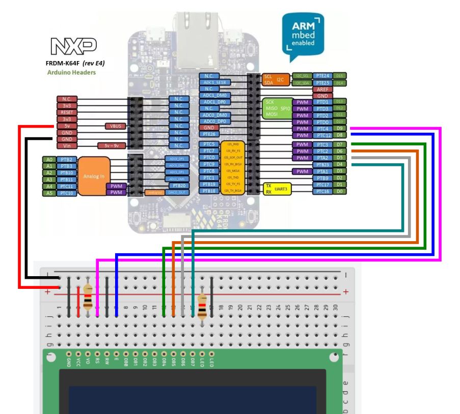

Lab 5 : Parallel LCD and Interrupt
Seneca College SEP600 Embedded Systems
Introduction
Documentation of the Cortex-M4 instruction set, board user's guide, and the microcontroller reference manual can be found here:
Cortex M4
FRDM-K64F
- FRDM-K64F Freedom Module User’s Guide (From nxp.com)
- Kinetis K64 Reference Manual (From nxp.com)
- FRDM-K64F mbed
FRDM-K66F
- FRDM-K66F Freedom Module User’s Guide (From nxp.com)
- Kinetis K66 Reference Manual (From nxp.com)
- FRDM-K66F mbed
Materials
- Safety glasses (PPE)
- Breadboard
- LCD Display (Parallel**)
- 1kΩ Resistors
- Jumper Wires
** If you are using an I2C LCD, connect the LCD to the I2C pins and use the I2C library instead of the parallel LCD library.
Preparation
Lab Preparation Question
- Read over the lab and understand the procedures.
Procedures
Part 1: Parallel LCD
In Part 1, we'll take a look at how to connect and display characters to a parallel LCD.
A parallel 16x2 LCD shown in Figure 5.1 usually uses 4-wire for parallel data transfer plus 2-wire for enable and register select. A 8-wire data configuration is sometimes used but normally not required.

Figure 5.1 16x2 LCD
The typical pinout and connection for a 16x2 LCD are given below. Please keep in mind that depending on the manufacturer, some labels and configurations may vary.
| LCD Pin # | LCD label | K64F/K66F Pin |
|---|---|---|
| 1 | GND / VSS | GND / 0V |
| 2 | VDD / VCC | 5V |
| 3 | VO | 1kΩ to GND / 0V |
| 4 | RS | D9 |
| 5 | R/W | GND / 0V |
| 6 | E | D8 |
| 7 | DB0 | N/C |
| 8 | DB1 | N/C |
| 9 | DB2 | N/C |
| 10 | DB3 | N/C |
| 11 | DB4 | D4 |
| 12 | DB5 | D5 |
| 13 | DB6 | D6 |
| 14 | DB7 | D7 |
| 15 | LED+ | 1kΩ to 5V |
| 16 | LED- | N/C |
- Some models work with 3.3V instead of 5V
- VO pin configuration varies depending on the manufacturer. A potentiometer can be used instead of a 1kΩ Resistor for adjustable contrast
You may change the pin to use on the K64F/K66F board depending on your application and pin availability.
-
Acquire an LCD and resistor then connect them to the Freedom K64F/K66F board as per the connection table given above and the diagram below. If you are using an I2C LCD, connect the LCD to an I2C pin.

Figure 5.2 LCD connection with Freedom board
-
Open mbed Studio and install the following library to your project depending if you are using the Parallel or I2C version of the LCD.
- Parallel LCD: https://os.mbed.com/users/sstaub/code/mbedLCD/
- I2C LCD: https://os.mbed.com/users/sstaub/code/mbedLCDi2c/
-
Use the following code to output some message on the display.
#include "mbed.h" #include "LCD.h" LCD lcd(D9, D8, D4, D5, D6, D7, LCD16x2); // RS, EN, D4-D7, Type int main() { lcd.cls(); // clear display lcd.locate(0, 0); // set cursor location lcd.printf("START\n"); // display text ThisThread::sleep_for(2s); lcd.cls(); // clear display lcd.locate(0, 0); // set cursor location lcd.printf("Hello World!\n"); // display text } -
After uploading your code, the LCD should show "START" for 2 seconds then "Hello World!".
Lab Question: Modify your code to display your name and student number on row 1 and your lab partner's name and student name on row 2 (or be creative like "SEP600 Embedded System is Awesome"). Since the message will be too wide for the LCD, display the text as a horizontal scrolling message at a reasonable rate.
Hint: There are many ways to do this. Refer to the library documentation on how to move the print cursor.
Part 2: Interrupt
Interrupt is a way for the microcontroller to listen to events without continuously polling from the input.
-
Connect a pull-up or pull-down button to any digital pin of your choosing.
-
Add the following code before
main()to create an interrupt object.InterruptIn button(PTXX); -
Add the following interrupt routine before
main()and add the appropriate code for displaying a message on the LCD.void button_isr(){ // display an interrupt messages on the LCD // USE wait_us for delay // DO NOT use ThisThread::sleep_for } -
Within
main()Attach the interrupt routine with the button and adjust for rise or fall edge depending on your circuit configuration.button.rise(&button_isr); -
Upload and test your interrupt.